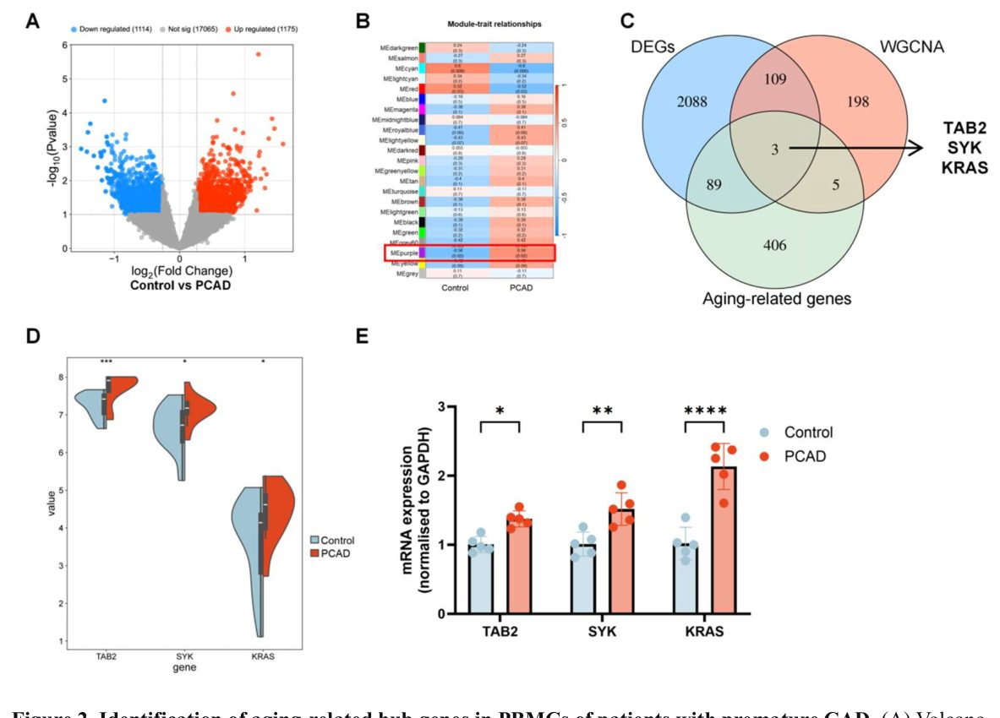
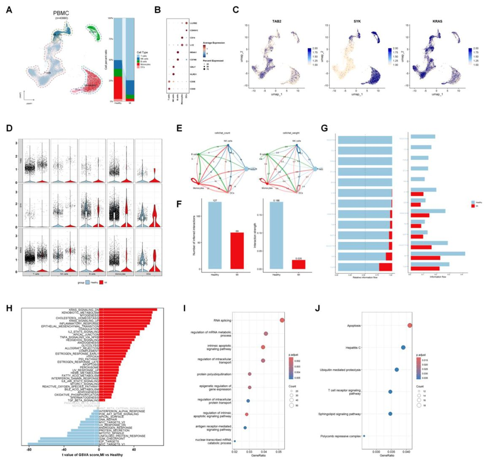
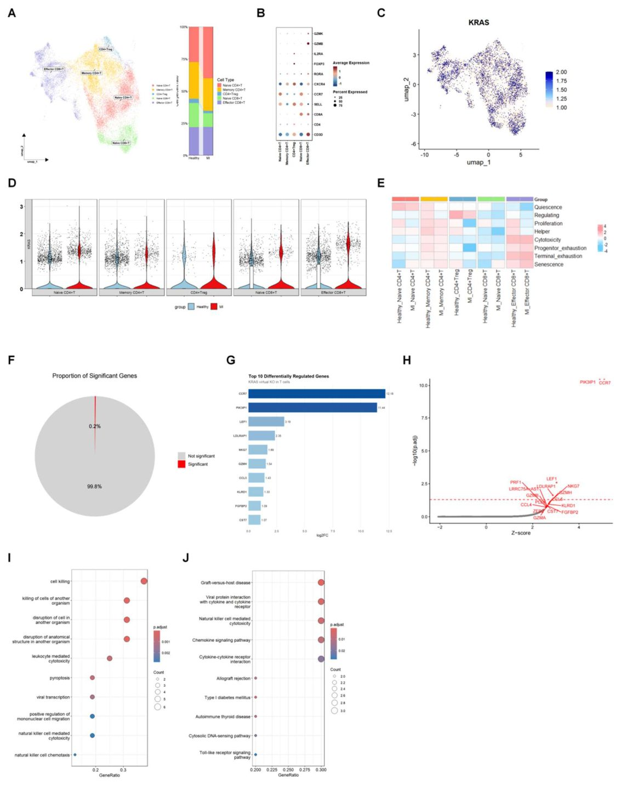
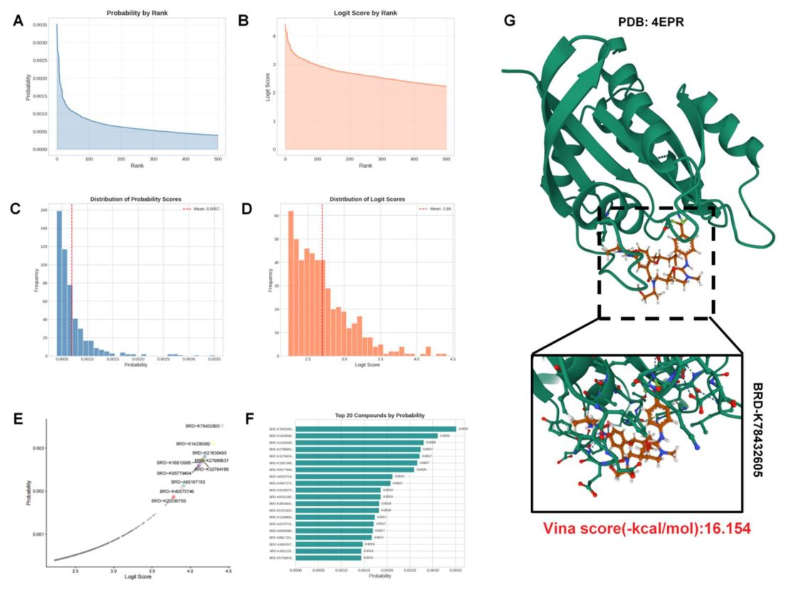

Почему иммунитет стареет раньше времени: роль белка KRAS в развитии сердечных болезней

Сердечно-сосудистые заболевания все чаще встречаются у молодых людей, но причины этого процесса остаются не до конца понятными. Новое исследование показывает, что ключевую роль здесь может играть белок KRAS, который активируется в иммунных клетках. Его избыток заставляет Т-лимфоциты «стареть» раньше времени, что провоцирует воспаление и повреждение сосудов. Это открытие может стать отправной точкой для разработки новых методов диагностики и терапии.
Главное
- KRAS выступает ключевым регулятором старения в эффекторных CD8+ Т-лимфоцитах
- Высокий уровень KRAS в Т-клетках коррелирует с тяжестью атеросклеротических бляшек
- Виртуальный скрининг выявил потенциальные малые молекулы для таргетного воздействия на KRAS
Подробнее
Исследователи проанализировали транскриптомные профили мононуклеаров периферической крови (PBMC) у пациентов с преждевременной ишемической болезнью сердца (PCAD) и контрольной группы. С помощью секвенирования РНК единичных клеток (scRNA-seq) было установлено, что ген KRAS аномально экспрессируется преимущественно в эффекторных CD8+ Т-лимфоцитах. Эти клетки демонстрируют признаки клеточного старения и истощения, а также повышенную цитотоксичность, что способствует развитию атеросклеротических бляшек.
Для проверки функциональной значимости KRAS авторы применили алгоритм виртуального нокаута (in silico gene perturbation), который показал, что подавление этого гена существенно меняет пути клеточного киллинга. С помощью методов молекулярного докинга и глубокого обучения было предсказано соединение, способное связываться с неактивной формой KRAS. Полученные данные подтверждают, что накопление «старых» Т-клеток в сосудистой стенке является важным патогенетическим звеном при раннем атеросклерозе.
Ограничения
Работа основана на корреляционном анализе и компьютерном моделировании; требуются экспериментальные исследования на живых организмах для подтверждения терапевтического эффекта.
Подробный разбор статьи
Резюме
Преждевременная ишемическая болезнь сердца (ПИБС) не имеет четко определенных молекулярных механизмов, а роль иммунного старения в её развитии остается неясной. В данной работе мы изучили, влияет ли нарушение регуляции генов, связанных со старением, в Т-лимфоцитах на возникновение ПИБС.
Для анализа мы использовали комплексный подход: полнотранскриптомное секвенирование (bulk RNA-seq) мононуклеаров периферической крови (PBMC) от 12 пациентов с ПИБС и 21 здорового добровольца, а также секвенирование РНК единичных клеток (scRNA-seq) PBMC и образцов атеросклеротических бляшек человека. Применялись методы взвешенного анализа сетей коэкспрессии генов (WGCNA), анализа сетей возмущений генов и молекулярного докинга.
Пояснение
WGCNA — это статистический метод для поиска групп (модулей) генов, которые работают согласованно, что помогает выявить ключевые биологические процессы.
Ген KRAS был идентифицирован как центральный узел (хаб), связывающий гены, ассоциированные с ПИБС, и гены, связанные со старением. Анализ на уровне единичных клеток показал, что экспрессия KRAS повышена преимущественно в эффекторных CD8+ Т-клетках. Эти клетки демонстрировали наиболее высокие показатели старения (senescence scores), которые дополнительно возрастали при наличии заболевания. Имитационное воздействие на сеть KRAS показало его значительное влияние на пути клеточной цитотоксичности. Эффекторные CD8+ Т-клетки с высоким уровнем KRAS были обнаружены в коронарных и сонных артериях, где они проявляли признаки повышенной цитотоксичности, истощения и старения. Кроме того, с помощью компьютерного моделирования было предсказано малое молекулярное соединение, способное связываться с неактивной формой KRAS.
Важно
Повышенная экспрессия KRAS в стареющих цитотоксических CD8+ Т-клетках является ключевым звеном ПИБС, связывающим иммунное старение и ранний атеросклероз.
Активация KRAS в стареющих цитотоксических CD8+ Т-клетках ассоциирована с ПИБС, что позволяет рассматривать этот механизм как мост между иммуностарением и ранним атеросклерозом. Полученные данные открывают перспективы для использования KRAS в качестве биомаркера и потенциальной терапевтической мишени, однако требуют дальнейшей функциональной проверки.
Осторожно
Работа основана на биоинформатическом анализе и данных секвенирования; для подтверждения терапевтического потенциала необходимы экспериментальные исследования in vivo.
Введение
Актуальность и клинические вызовы PCAD
Преждевременная ишемическая болезнь сердца (PCAD) представляет собой сложную и всё более острую проблему кардиологии. Долгое время ей уделяли недостаточно внимания, так как заболеваемость среди молодых людей была значительно ниже, чем в старших возрастных группах. Однако смертность от сердечно-сосудистых заболеваний среди молодежи остается высокой, а доля острого инфаркта миокарда (AMI) в этой популяции неуклонно растет. Современные стратегии профилактики опираются на шкалы риска, разработанные для людей среднего и пожилого возраста, что приводит к систематической недооценке угроз для молодых пациентов. В результате диагноз часто ставится уже после острого сердечно-сосудистого события, а отсутствие надежных эпидемиологических данных ограничивает создание точных методов терапии.
Важно
PCAD часто диагностируется слишком поздно из-за неэффективности стандартных шкал риска, что требует поиска новых молекулярных драйверов болезни.
Хотя у большинства молодых пациентов присутствуют классические факторы риска (курение, ожирение, гиперлипидемия), ускоренное развитие атеросклероза требует более глубокого изучения. Старение является независимым фактором риска ИБС, сопровождающимся иммуностарением — функциональным ухудшением иммунной системы, характеризующимся нарушением секреции цитокинов и изменением состава иммунных клеток. Это состояние способствует хроническому воспалению, стимулирующему атеросклероз. В частности, у пожилых пациентов в атеросклеротических бляшках накапливаются стареющие Т-клетки, которые теряют способность распознавать антигены окисленного ЛПНП и секретируют провоспалительные хемокины.
Пояснение
Иммуностарение — это процесс возрастного накопления «уставших» иммунных клеток, которые теряют защитные функции и начинают поддерживать хроническое воспаление.
Роль KRAS и дизайн исследования
Роль Т-клеточного иммуностарения при PCAD остается неясной. Белок KRAS, малая ГТФаза, регулирует пролиферацию и выживаемость клеток через каскады MAPK/ERK, PI3K/AKT/mTOR и другие. Известно, что аномальная активация KRAS (даже без мутаций) может индуцировать клеточное старение. В данном исследовании авторы интегрировали транскриптомное профилирование, scRNA-seq, виртуальный нокаут генов, глубокое обучение для поиска соединений и молекулярный докинг. Было установлено, что KRAS является ключевым геном, связывающим PCAD с процессами старения, причем его экспрессия повышена преимущественно в эффекторных CD8+ Т-клетках.
Пояснение
Виртуальный нокаут — это вычислительный метод, позволяющий с помощью алгоритмов предсказать, как изменится поведение клетки, если «отключить» конкретный ген, не проводя реальный эксперимент.
Анализ показал, что высокий уровень KRAS запускает цитотоксическую программу и ассоциирован с признаками клеточного старения. Эта субпопуляция CD8+ Т-клеток была подтверждена в данных по коронарным и каротидным бляшкам. С помощью ИИ-модели был предложен малый молекулярный кандидат, способный связываться с KRAS, что открывает путь к терапии «неподдающегося лечению» белка. Общий ход работы представлен на Рис. 1.
Получение общедоступных данных
Для анализа использовались наборы данных из базы GEO. Транскриптомные данные (bulk RNA-seq) мононуклеаров периферической крови (PBMC) пациентов с PCAD и здоровых лиц взяты из GSE12288. Данные scRNA-seq PBMC получены из GSE231906 и GSE145154, а данные scRNA-seq коронарных атеросклеротических бляшек — из GSE252243 и GSE264666.
Сбор и валидация клинических образцов
Исследование типа «случай-контроль» проводилось на базе Второй дочерней больницы Харбинского медицинского университета в период с 1 января 2025 по 1 января 2026 года (одобрение этического комитета KY-2025394). Для валидации PBMC (мононуклеарных клеток периферической крови) отобрали 5 пациентов с преждевременной ишемической болезнью сердца (PCAD) и 5 здоровых добровольцев (возраст <45 лет). Диагноз PCAD подтверждался ангиографически (стеноз >70% в одной из крупных эпикардиальных артерий), в группе контроля стеноз отсутствовал. Уровни мРНК KRAS, SYK и TAB2 измеряли методом qPCR. Для анализа бляшек использовали образцы сонных артерий от 5 пациентов с тяжелым симптоматическим стенозом, перенесших каротидную эндартерэктомию. Диагноз подтверждался DSA при наличии транзиторной ишемической атаки или инсульта в анамнезе (стеноз ≥50%) либо при стенозе 50–69% с признаками нестабильности бляшки. Учитывались факторы: возраст, пол, курение, гипертензия, диабет и липидный профиль.
Важно
Валидация проведена на 10 образцах PBMC и 5 образцах каротидных бляшек с учетом клинических факторов риска.
Дифференциальная экспрессия и WGCNA
Транскриптомные данные нормализовали и анализировали с помощью пакета limma (v3.62.2) в R (v4.4.3). Значимыми считались гены с p < 0.05 и абсолютным изменением экспрессии (fold change) > 1.5. Сетевой анализ WGCNA (v1.74) проводился при степени мягкого порога 12 для достижения безмасштабной топологии. Модули выделялись методом динамической обрезки дерева (минимальный размер 80). Ключевые гены модулей сопоставлялись с данными об ИБС и генами старения из базы Aging Atlas.
Пояснение
WGCNA — метод поиска групп (модулей) коэкспрессирующихся генов, которые работают как единая функциональная сеть.
Обработка данных scRNA-seq
Данные scRNA-seq обрабатывались в Seurat (v5.5.0). Отфильтровывались клетки с < 200 генами и > 10% митохондриальных прочтений. Нормализация проводилась через SCTransform. PCA выполнялся по 2000 вариабельным генам, для кластеризации (разрешение 0.6) использовали первые 20 главных компонент. Типы клеток идентифицировали по маркерам: T-клетки (CD3D, CD3E), NK-клетки (KLRD1, GNLY), B-клетки (MS4A1, CD79B), моноциты (CD14, LYZ), дендритные клетки (CDKN1C, LILRB2), макрофаги (CD68, C1QA), гладкомышечные клетки (ACTA2, MYH11), фибробласты (COL6A1, FN1) и эндотелиоциты (PECAM1, EGFL7).
Межклеточная коммуникация и анализ путей
Взаимодействия анализировали через CellChat (v2.1.1). Функциональные пути оценивали методом GSVA (v2.0.7) с использованием наборов генов MSigDB. Для T-клеток дифференциальную экспрессию между группами MI и Healthy определяли функцией FindMarkers (log-fold change > 0.5, p.adj < 0.05) с последующим анализом GO и KEGG через clusterProfiler (v4.14.6).
Анализ субпопуляций T-клеток и функциональное профилирование
T-клетки перекластеризовали для выделения субпопуляций: наивные CD4+ (CD4, CCR7, SELL), CD4+ памяти (CD4, CXCR4, RORA), регуляторные CD4+ (CD4, FOXP3, IL2RA), наивные CD8+ (CD8A, CCR7, SELL) и эффекторные CD8+ (CD8A, GZMK, GZMB). Состояния (цитотоксичность, истощение, старение) оценивали пакетом TCellSI (v1.2.0).
Виртуальный нокаут генов
Пакет scTenifoldKnk (v1.0.3) применялся для моделирования «нокаута» KRAS в T-клетках. Алгоритм строит регуляторную сеть, удаляет целевой ген и сравнивает изменения в сети. Топ-20 наиболее затронутых генов анализировались на обогащение путями GO и KEGG.
Пояснение
Виртуальный нокаут (in silico) — компьютерное моделирование последствий удаления гена без реального генетического вмешательства.
Прогнозирование лекарственных препаратов на основе глубокого обучения и молекулярный докинг
Модель глубокого обучения DrugReflector была обучена на базе данных Connectivity Map (CMap). В качестве входного сигнала для определения патологии использовали список генов с повышенной экспрессией (DEGs), выявленных при сравнении Т-клеток пациентов с инфарктом миокарда (MI) и здоровых доноров. Модель ранжировала соединения по их способности нивелировать патологический профиль экспрессии. Лидером рейтинга стало соединение BRD-K78432605, которое было отобрано для молекулярного докинга. Для этого использовали кристаллическую структуру неактивного белка KRAS, связанного с ВВП (PDB: 4EPR, разрешение 2,00 Å). Докинг проводили в программе AutoDock Vina (версия 4.2.6), область поиска (grid box) центрировали на интерфейсе связывания SOS. Визуализацию результатов выполнили в PyMOL (версия 2.6.0).
Важно
Модель DrugReflector определила BRD-K78432605 как наиболее перспективное соединение для коррекции профиля экспрессии генов при инфаркте миокарда.
Количественная ПЦР в реальном времени
Образцы тканей измельчали до состояния порошка, после чего добавляли реагент TRIzol (Invitrogen, США). Клеточные образцы обрабатывали TRIzol после удаления супернатанта. Экстракцию РНК проводили путем добавления хлороформа (350 мкл на 1 мл TRIzol) с последующим центрифугированием (15 мин, 12 000 об/мин, комнатная температура). Супернатант смешивали с 500 мкл изопропанола, выдерживали 10 минут и центрифугировали (10 мин, 12 000 об/мин, 4 °C). Осадок промывали 1 мл 75% этанола (центрифугирование 5 мин, 4 °C). После высыхания осадок растворяли в воде, свободной от нуклеаз, и измеряли концентрацию РНК (хранение при −80 °C). Синтез кДНК осуществляли с помощью набора Toyobo, а ПЦР — с использованием 2X M5 HiPer SYBR Premix EsTaq plus. Относительную экспрессию рассчитывали методом 2⁻ΔΔ Ct с нормализацией по гену GAPDH. Использовались праймеры для генов TAB2, SYK, KRAS и GAPDH.
Пояснение
Метод 2⁻ΔΔ Ct позволяет оценить относительное изменение уровня экспрессии гена, сравнивая его с контрольным «домашним» геном (GAPDH) в разных условиях.
Иммунофлуоресцентное окрашивание атеросклеротических бляшек
Срезы человеческих каротидных бляшек (толщина 4 мкм) депарафинировали и подвергали демаскировке антигенов в цитратном буфере (pH 6,0) при нагревании в микроволновой печи. После блокировки 5% бычьим сывороточным альбумином срезы инкубировали с первичными антителами (анти-CD8a + анти-KRAS или анти-KRAS + анти-p16-INK4A) в течение ночи при 4 °C. Затем использовали вторичные антитела, конъюгированные с Alexa Fluor 488 и Alexa Fluor 594 (1:500). Ядра окрашивали DAPI. Изображения получали на микроскопе Zeiss Axio Observer и анализировали в ImageJ. Для каждой пары антител подсчитывали количество двойных позитивных клеток в пяти случайных полях зрения (×200).
Статистический анализ
Анализ проводили в R (версия 4.4.3). Сравнение клинических групп (PCAD против контроля) выполняли с помощью t-критерия Стьюдента с поправкой на возраст, пол, курение, гипертензию, диабет и липидный профиль через многофакторную линейную регрессию. Для сравнения нескольких групп применяли однофакторный дисперсионный анализ (ANOVA) с пост-хок тестом Тьюки. Порог значимости p < 0,05. Для иммунофлуоресценции формальное статистическое тестирование не проводилось, так как это был дескриптивный этап валидации.
Результаты
Идентификация ключевых генов старения в мононуклеарах периферической крови (PBMC) при преждевременной ишемической болезни сердца (PCAD)
Авторы проанализировали транскриптомные данные PBMC из базы GSE12288, включающие 12 пациентов с ишемической болезнью сердца (CAD) в возрасте до 45 лет и 21 здорового донора. Используя пакет limma при порогах p < 0.05 и /fold change/ > 1.5, было выявлено 2289 дифференциально экспрессирующихся генов (DEG), из которых 1175 были гиперэкспрессированы, а 1114 — подавлены (Рис. 2A). Метод взвешенного анализа сетей коэкспрессии генов (WGCNA) выделил 23 модуля, среди которых пурпурный модуль показал наиболее сильную связь с PCAD (Рис. 2B). Пересечение 315 ключевых генов этого модуля с 2289 DEG и 503 генами, связанными со старением (база Aging Atlas), позволило выделить три регуляторных гена: TAB2, SYK и KRAS (Рис. 2C). Уровни их экспрессии в группе PCAD оказались выше, чем в контроле (Рис. 2D), что было подтверждено методом количественной ПЦР (Рис. 2E).


Полное описание рисунка
Рисунок 2. Идентификация хабовых генов, связанных со старением, в мононуклеарах периферической крови (PBMC) пациентов с преждевременной ишемической болезнью сердца (ИБС). (A) Вулканический график дифференциально экспрессирующихся генов (DEG) между пациентами с ИБС и здоровыми контрольными лицами. (B) Тепловая карта ассоциаций модулей и признаков, полученная в результате взвешенного анализа сетей коэкспрессии генов (WGCNA); фиолетовый модуль показывает наиболее сильную корреляцию с ИБС. (C) Диаграмма Венна, иллюстрирующая пересечение 315 ключевых генов из фиолетового модуля, 2289 DEG и 503 генов, связанных со старением, из базы данных Aging Atlas, что позволило выявить три общих хабовых гена: TAB2, SYK и KRAS. (D) Скрипичные диаграммы, отображающие уровни экспрессии TAB2, SYK и KRAS в PBMC группы ИБС по сравнению с контрольной группой. (E) qPCR-валидация различий в экспрессии трех хабовых генов. Данные представлены как среднее ± стандартное отклонение; *p < 0,05, p < 0,01, *p < 0,001.
Важно
Гены TAB2, SYK и KRAS были идентифицированы как ключевые регуляторы, демонстрирующие повышенную экспрессию в PBMC пациентов с PCAD.
Гиперэкспрессия KRAS в Т-лимфоцитах периферической крови тесно связана с PCAD
Для уточнения клеточного контекста авторы переанализировали данные scRNA-seq (GSE231906 и GSE145154) от 2 пациентов с ишемической кардиомиопатией (группа MI, возраст <45 лет) и 4 здоровых лиц. Были идентифицированы пять типов клеток: Т-клетки, NK-клетки, В-клетки, моноциты и дендритные клетки. В группе MI наблюдалась повышенная доля Т-клеток и сниженная доля моноцитов (Рис. 3A, B). Анализ показал, что TAB2 и KRAS преимущественно экспрессируются в Т-клетках, а SYK — в моноцитах (Рис. 3C). Во всех типах клеток группы MI экспрессия этих генов была выше, чем в группе здоровых (Рис. 3D). Межклеточная коммуникация была глобально ослаблена в группе MI (Рис. 3F), при этом Т-клетки занимали центральное положение (Рис. 3E). Анализ GSVA выявил значительную активацию сигнального пути KRAS и пути p53 в группе MI (Рис. 3H). Дифференциальный анализ Т-клеток показал, что гены, активированные в группе MI, обогащены процессами сплайсинга РНК и апоптоза (Рис. 3I, J).


Полное описание рисунка
Рисунок 3. Результаты секвенирования единичных клеток PBMC демонстрируют ключевые гены. (A) UMAP-график PBMC и пропорции типов клеток; (B) Пузырьковая диаграмма экспрессии маркерных генов в различных типах клеток; (C) Распределение экспрессии TAB2, SYK и KRAS; (D) Уровни экспрессии TAB2, SYK и KRAS в различных группах и типах клеток (показаны в виде скрипичных диаграмм); (E) Результаты межклеточной коммуникации CellChat (количество и вес); (F) Сравнение результатов межклеточной коммуникации CellChat между различными группами (количество и вес); (G) Уровни активности путей взаимодействия в различных группах; (H) Тепловая карта показателей активности путей GSVA; (I) Пузырьковая диаграмма GO-обогащения для генов с повышенной экспрессией в Т-клетках группы инфаркта миокарда (MI); (J) Пузырьковая диаграмма KEGG-обогащения для генов с повышенной экспрессией в Т-клетках группы MI.
Пояснение
scRNA-seq (одноклеточное секвенирование РНК) позволяет изучать профили экспрессии генов в каждой отдельной клетке, а не в усредненной массе тканей.
Осторожно
Наблюдаемые изменения в межклеточных взаимодействиях и экспрессии генов основаны на данных малых выборок пациентов, что требует осторожности при интерпретации причинно-следственных связей.
Гиперэкспрессия KRAS в эффекторных CD8+ Т-клетках ускоряет иммуностарение
При кластеризации Т-клеток были выделены пять подтипов: наивные CD4+, Т-клетки памяти CD4+, регуляторные CD4+, наивные CD8+ и эффекторные CD8+ Т-клетки. В группе MI доля наивных CD4+ Т-клеток была выше, а наивных CD8+ — ниже (Рис. 4A, B). KRAS экспрессировался во всех подтипах, достигая максимума в наивных CD4+ и эффекторных CD8+ Т-клетках (Рис. 4C, D). Алгоритм TCellSI показал, что эффекторные CD8+ Т-клетки имеют самый высокий индекс старения, который дополнительно возрастал в группе MI. Виртуальный нокаут KRAS (scTenifoldKnk) затронул такие гены, как CCR7 и PIK3IP1 (Рис. 4F-H), а анализ обогащения подтвердил связь KRAS с путями цитотоксичности и клеточной гибели (Рис. 4I, J).


Полное описание рисунка
Рисунок 4. Функциональный анализ субпопуляций Т-клеток в PBMC. (A) UMAP-график субпопуляций Т-клеток и пропорции типов клеток; (B) Пузырьковая диаграмма экспрессии маркерных генов в различных типах клеток; (C) Распределение экспрессии KRAS; (D) Уровень экспрессии KRAS в каждой субпопуляции Т-клеток; (E) Тепловая карта функциональных показателей TCellSI; (F) Круговая диаграмма доли значительно измененных генов после виртуального нокаута scTenifoldKnk; (G) Столбчатая диаграмма 10 наиболее значительно измененных генов; (H) Диаграмма рассеяния значительно измененных генов; (I) Пузырьковая диаграмма GO-обогащения значительно измененных генов; (J) Пузырьковая диаграмма KEGG-обогащения значительно измененных генов.
Важно
Эффекторные CD8+ Т-клетки с высоким уровнем KRAS демонстрируют признаки ускоренного иммуностарения, что функционально связано с их цитотоксической активностью.
Эффекторные CD8+ Т-клетки с высокой экспрессией KRAS инфильтрируют атеросклеротические бляшки и проявляют усиленную эффекторную функцию
Установив, что повышенная экспрессия KRAS в эффекторных CD8+ Т-клетках периферической крови усиливает их цитотоксичность и способствует старению у пациентов с преждевременной ишемической болезнью сердца (PCAD), мы исследовали, наблюдается ли этот процесс непосредственно в атеросклеротических бляшках. Был проведен повторный анализ общедоступных данных scRNA-seq (GSE252243 и GSE264666) образцов коронарных бляшек от пяти пациентов с прогрессирующим атеросклерозом. После снижения размерности и кластеризации были идентифицированы семь типов клеток: макрофаги, Т-клетки, NK-клетки, B-клетки, гладкомышечные клетки, фибробласты и эндотелиальные клетки (Рис. 5A, B). Как и в случае с периферической кровью, Т-клетки показали наибольшую долю и уровень экспрессии KRAS (Рис. 5C, D). При субкластеризации Т-клеток были выделены четыре подтипа: наивные CD4+, Т-клетки памяти CD4+, регуляторные CD4+ и эффекторные CD8+ Т-клетки (Рис. 5E, F). Разделив эффекторные CD8+ Т-клетки на группы с высоким и низким уровнем KRAS (по 75-му перцентилю), мы обнаружили, что группа с высоким KRAS демонстрирует более выраженные признаки цитотоксичности, истощения и старения согласно оценке TCellSI (Рис. 5G). Анализ GO-терминов показал обогащение генов, связанных с иммунным ответом и передачей сигналов через рецепторы клеточной поверхности, что подтверждает более активное состояние этих клеток в микроокружении бляшки (Рис. 5H). Иммунофлуоресцентное окрашивание тканей сонных артерий подтвердило наличие данной субпопуляции (Рис. 5I).

Полное описание рисунка
Рисунок 5. Результаты секвенирования единичных клеток бляшек коронарных артерий подтверждают наличие и функцию субпопуляции Т-клеток с повышенной экспрессией KRAS. (A) UMAP-график бляшек коронарных артерий и пропорции типов клеток; (B) Пузырьковая диаграмма экспрессии маркерных генов в различных типах клеток внутри бляшек; (C) Распределение экспрессии KRAS; (D) Уровень экспрессии KRAS в различных типах клеток; (E) UMAP-график субпопуляций Т-клеток; (F) Пузырьковая диаграмма экспрессии маркерных генов в каждой субпопуляции Т-клеток внутри бляшек; (G) Сравнение функциональных показателей TCellSI между эффекторными CD8+ Т-клетками с высоким и низким уровнем KRAS; (H) GO-функциональный анализ обогащения дифференциально экспрессирующихся генов в субпопуляции с высоким уровнем KRAS; (I) Изображения иммунофлуоресцентной ко-локализации в бляшках сонной артерии человека.
Важно
Эффекторные CD8+ Т-клетки с высоким уровнем KRAS в бляшках обладают повышенной цитотоксичностью и способствуют локальному воспалению, что потенциально ведет к дестабилизации атеросклеротической бляшки.
Пояснение
scRNA-seq (секвенирование РНК единичных клеток) — метод, позволяющий изучать профиль экспрессии генов каждой отдельной клетки, что дает возможность увидеть редкие типы клеток и их функциональные различия в гетерогенной ткани.
Модель глубокого обучения в сочетании с транскриптомным секвенированием единичных клеток для прогнозирования терапевтических соединений
Для поиска малых молекул, способных обратить транскриптомные нарушения, вызванные KRAS, мы использовали модель глубокого обучения DrugReflector. Модель, обученная на базе данных CMap (9 597 возмущений в 52 клеточных линиях), ранжирует соединения по их способности возвращать профиль экспрессии генов к здоровому состоянию. В качестве «болезненной сигнатуры» мы использовали дифференциально экспрессируемые гены Т-клеток пациентов с инфарктом миокарда (Рис. 6A–D). Наивысший балл соответствия получил препарат BRD-K78432605, что указывает на его потенциальную способность связываться с KRAS или модулировать его пути (Рис. 6E, F). Для оценки взаимодействия мы провели молекулярный докинг с использованием неактивной закрытой конформации KRAS (PDB: 4EPR, разрешение 2,00 Å). Энергия связывания составила -16,154 ккал/моль (Рис. 6G). Это значение значительно ниже порога активности в -7,0 ккал/моль, что свидетельствует о термодинамически выгодном связывании и способности молекулы стабилизировать неактивное состояние KRAS.


Полное описание рисунка
Рисунок 6. Предсказание лекарственных препаратов с помощью модели глубокого обучения DrugReflector и валидация методом молекулярного докинга. (A–B) Вероятность и логит-оценка (ранжированные) соединений, предсказанных DrugReflector после ввода результатов анализа единичных клеток PBMC; (C–D) Графики распределения вероятности и логит-оценки соединений, предсказанных DrugReflector после ввода результатов анализа единичных клеток PBMC; (E–F) Топ-10 и Топ-20 соединений, отображенных на кривых предсказания вероятности и логит-оценки; (G) Схематическая диаграмма конформации молекулярного докинга BRD-K78432605 и закрытой конформации KRAS (PDB: 4EPR).
Пояснение
Молекулярный докинг — компьютерный метод моделирования, предсказывающий, как молекула лекарства (лиганд) «садится» в активный центр белка-мишени, оценивая прочность этого соединения через энергию связывания.
Обсуждение
Механизмы связи KRAS и преждевременного старения иммунитета
Интегрируя данные транскриптомного профилирования, секвенирования единичных клеток, виртуального нокаута генов, глубокого обучения и молекулярного докинга, данное исследование выявило повышенную экспрессию протоонкогена KRAS в Т-лимфоцитах периферической крови у пациентов с преждевременной ишемической болезнью сердца (PCAD). Мы установили, что эффекторные CD8+ Т-клетки с высоким уровнем KRAS демонстрируют максимальные показатели старения (senescence scores), которые дополнительно возрастают в группе инфаркта миокарда (MI) по сравнению с контролем. Это указывает на ускоренное иммуностарение: у молодых людей специфические субпопуляции Т-клеток преждевременно приобретают фенотип старения, выделяя факторы SASP и проявляя повышенную цитотоксичность, что повреждает сосудистую стенку. Общая межклеточная коммуникация в мононуклеарах периферической крови (PBMC) в группе MI была снижена, что отражает потерю координации, характерную для стареющей иммунной системы.
Важно
Повышение уровня KRAS в Т-клетках является ключевым молекулярным звеном, связывающим преждевременное иммуностарение и развитие атеросклероза у молодых пациентов.
Пояснение
SASP (senescence-associated secretory phenotype) — это комплекс факторов (цитокинов, хемокинов, протеаз), которые секретируют стареющие клетки, вызывая воспаление и повреждение окружающих тканей.
Клиническое значение и диагностический потенциал
Диагностика PCAD остается сложной задачей, так как существующие шкалы риска, такие как уравнения Pooled Cohort Equations, не адаптированы для лиц моложе 40 лет, а рекомендации по оценке коронарного кальция (CAC) основаны на данных для пациентов старше 45 лет. Несмотря на кажущийся низкий 10-летний риск, пожизненный риск у молодых людей значителен, а прогноз при инфаркте миокарда часто неблагоприятен. В настоящее время специфические биомаркеры для PCAD ограничены: С-реактивный белок и индекс плазменного атеросклероза (AIP) показывают прогностическую ценность, но не внедрены в широкую практику. Наше открытие позволяет рассматривать KRAS и его транскрипционные сигнатуры как перспективные маркеры раннего биологического старения иммунной системы, дополняющие липидный профиль.
Осторожно
Исследование носит наблюдательный характер; необходимы проспективные работы для подтверждения того, что экспрессия KRAS в Т-клетках может улучшить стратификацию риска и персонализацию терапии.
Роль CCR7 в дисфункции Т-клеток
Виртуальный нокаут KRAS показал, что наиболее значимо меняется экспрессия гена CCR7 — рецептора, направляющего Т-клетки в лимфоидные органы. В норме сигналы CCR7 обеспечивают своевременное прекращение контакта Т-клетки с антигенпрезентирующей клеткой. При аберрантной активации KRAS экспрессия CCR7 подавляется, что приводит к двум последствиям: во-первых, Т-клетки избегают контроля в лимфоидных органах и мигрируют в периферические ткани, включая стенки артерий; во-вторых, из-за отсутствия сигнала «открепления» Т-клетки в бляшке подвергаются избыточной стимуляции рецепторов TCR, приобретая фенотип истощения с высокой экспрессией PD-1 и CTLA-4. Это объясняет парадоксальное сочетание высокой цитотоксичности и признаков истощения/старения в CD8+ Т-клетках, обнаруженных в атеросклеротических бляшках.
Пояснение
Виртуальный нокаут — это метод компьютерного моделирования, позволяющий предсказать последствия «выключения» функции конкретного гена на основе анализа транскриптомных данных без проведения реальных генетических манипуляций.
Ограничения исследования
Данная работа имеет ряд ограничений, которые необходимо учитывать. Во-первых, из-за отсутствия полных данных клинического наблюдения в открытых источниках мы не смогли напрямую оценить связь между уровнем экспрессии KRAS в Т-клетках и клиническими исходами, такими как серьезные неблагоприятные сердечно-сосудистые события, что ограничивает прогностическую ценность KRAS как биомаркера. Во-вторых, использованные наборы данных охватывают различные патологические состояния: ишемическую болезнь сердца у пациентов моложе 45 лет, ишемию миокарда (ишемическую кардиомиопатию) и прогрессирующие атеросклеротические бляшки. Хотя все они относятся к спектру преждевременного атеросклероза, их стадии и клинические определения различаются, что может вносить гетерогенность при объединении данных.
В-третьих, анализ единичных клеток (scRNA-seq) периферической крови базировался на ограниченной выборке (два образца пациентов и четыре контрольных), что может усиливать влияние индивидуальной вариативности; однако ключевые выводы были подтверждены независимыми данными секвенирования бляшек и иммунофлуоресцентным окрашиванием. В-четвертых, все механистические выводы основаны на вычислительном анализе и повторной обработке существующих данных, без экспериментальной проверки функций KRAS (gain- or loss-of-function). Вопрос о том, достаточно ли повышения уровня KRAS для формирования цитотоксического, стареющего фенотипа Т-клеток, требует проверки методами лентивирусной сверхэкспрессии или создания моделей с нокаутом гена Kras в Т-клетках.
Важно
Основные выводы ограничены вычислительными методами и требуют экспериментального подтверждения роли KRAS в формировании фенотипа Т-клеток.
Пояснение
Нокаут (knock-out) — это генетическая технология «выключения» функции конкретного гена для изучения его роли в организме.
Осторожно
Исследование носит преимущественно биоинформатический характер; корреляции, выявленные на малых выборках, требуют дальнейшей валидации.
В-пятых, мы не исследовали наличие мутаций в гене KRAS в Т-клетках периферической крови, поэтому будущие работы должны уточнить вклад транскрипционной активации по сравнению с редкими мутациями. Наконец, кандидатное соединение BRD-K78432605, выявленное алгоритмами, требует экспериментальной проверки перед обсуждением его терапевтического потенциала.
Заявление об использовании ИИ
Авторы использовали инструменты на базе ИИ для анализа данных. Программа scTenifoldKnk (версия 1.0.3) применялась для моделирования «виртуального нокаута» гена: инструмент строит регуляторные сети единичных клеток, удаляет целевой ген и сравнивает измененную сеть с исходной для выявления нарушений. Для подбора лекарств использовалась модель DrugReflector, обученная на базе данных Connectivity Map (CMap), которая ранжирует соединения по их способности корректировать профиль экспрессии генов. Генеративные ИИ-инструменты для написания текста не применялись, за исключением коррекции грамматики.
Схема исследования
Препринт не прошёл рецензирование. Выводы предварительные.
Источник
| Источник | Категория | Лицензия препринта |
|---|---|---|
| bioRxiv | bioinformatics | все права у авторов |
Источники
| Источник | Ссылка |
|---|---|
| Страница препринта | biorxiv.org |
| Полный текст (PDF) | biorxiv.org |
| DOI | doi.org |
| Метаданные Crossref | api.crossref.org |
| Europe PMC | europepmc.org |
| Иллюстрация | commons.wikimedia.org |